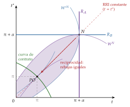
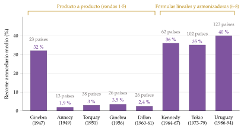
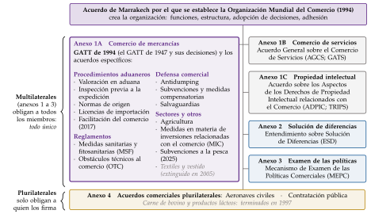
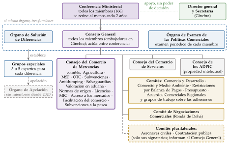
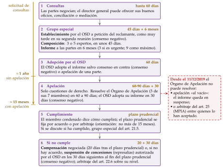
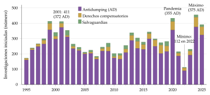
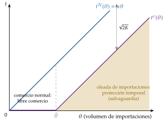
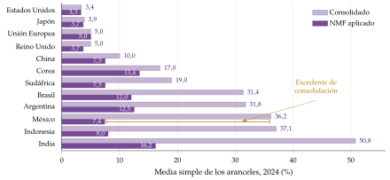
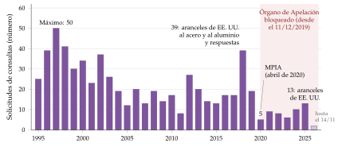
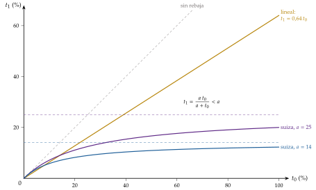

Tema 3.B.33
La OMC. Antecedentes y Organización actual. El GATT y los Acuerdos sobre el comercio de mercancías. Situación actual.
Del GATT a la OMC: rondas, organización, NMF y excepciones, acuerdos de mercancías, Bagwell-Staiger, salvaguardias, crisis de la apelación y aranceles de EE.UU.
Exclusivo Material exclusivo de victorgutierrezmarcos.es y la app Oposición TCEE · DCE. Puedes usarlo libremente para tu estudio personal. No se autoriza su incorporación a otras plataformas, aplicaciones o servicios. Condiciones de uso.
Introducción
Enganche:
«Hecha la ley, hecha la trampa», dice el refrán. El GATT nació en 1947 con una regla de oro, tratar igual a todos los socios, y con un puñado de excepciones; una de ellas permite a cada país hacer lo que considere necesario para proteger «los intereses esenciales de su seguridad».
En 2025, Estados Unidos impuso aranceles adicionales a casi todos sus socios y, cuando China y Canadá los llevaron a la Organización Mundial del Comercio (OMC), respondió que eran cuestiones de seguridad nacional que la OMC no podía juzgar. A principios de 2026, solo el 72 % del comercio mundial se hacía ya en condiciones de nación más favorecida, frente al 83 % de 2022.
La pregunta que recorre la exposición es: ¿sirven todavía unas reglas comunes para el comercio cuando el país que las impulsó prefiere sus excepciones?
Relevancia:
Es casi universal: la OMC tiene 166 miembros, que hacen en torno al 98 % del comercio mundial, y 22 países negocian su adhesión.
Ha sido el gran éxito institucional de la posguerra: en 8 rondas, el GATT bajó los aranceles industriales de los países desarrollados desde el 40 % en torno a 1947 hasta menos del 4 %, y el comercio creció más deprisa que la producción durante 50 años.
Para España: es miembro del GATT desde 1963 [ver tema 4.A.27] y de la OMC desde su creación, pero negocia a través de la Unión Europea, que tiene la competencia exclusiva en política comercial [ver tema 3.B.41]. Le afectan de lleno sus disputas, como la de las aceitunas negras con Estados Unidos (DS577), que la UE ganó y en la que en 2025 se la autorizó a tomar represalias.
Contextualización:
Qué es: la Organización Mundial del Comercio es la organización internacional que administra las reglas del comercio entre sus miembros. Nació el 1 de enero de 1995 del Acuerdo de Marrakech, que cerró la Ronda Uruguay, y tiene su sede en Ginebra.
De dónde viene: en la conferencia de Bretton Woods (1944) se diseñaron 3 pilares para el orden económico de la posguerra: el monetario, con el Fondo Monetario Internacional [ver tema 3.B.22]; el del desarrollo, con el Banco Internacional de Reconstrucción y Fomento, hoy en el Grupo Banco Mundial [ver tema 3.B.30]; y el comercial, con una Organización Internacional del Comercio (OIC) que nunca llegó a nacer. En su lugar quedó un tratado provisional, el Acuerdo General sobre Aranceles Aduaneros y Comercio (General Agreement on Tariffs and Trade, GATT, 1947), que hizo de organización durante casi medio siglo [ver tema 3.B.20].
Qué añade la OMC al GATT: 3 cosas.
Es una institución: tiene personalidad jurídica propia, y sus acuerdos multilaterales obligan a todos los miembros como un todo único (single undertaking).
Resuelve las diferencias casi de forma automática: los informes se adoptan salvo que todos se opongan (consenso negativo), cuando en el GATT bastaba con que el país condenado se opusiera para bloquearlos.
Abarca más: a las mercancías suma los servicios y la propiedad intelectual, y vuelve a someter a reglas la agricultura y los textiles.
El objeto de esta exposición: la OMC y las reglas del comercio de mercancías. Los acuerdos sobre servicios (AGCS), propiedad intelectual (ADPIC), contratación pública y los nuevos acuerdos plurilaterales se tratan aparte [ver tema 3.B.34].
Problemática:
¿Por qué necesitan los países un acuerdo para comerciar, si el libre comercio ya les conviene a cada uno?
¿Cómo se pasó del GATT a la OMC, y cómo se organiza y decide hoy?
¿Qué reglas rigen el comercio de mercancías y qué excepciones admiten?
¿Por qué está atascada la OMC y qué futuro tiene?
Estructura:
La exposición va de la institución a sus reglas y de las reglas a su crisis:
I. La OMC: antecedentes y organización actual (I): del bilateralismo y la guerra arancelaria de entreguerras al GATT y sus rondas, con la teoría que explica por qué hace falta un acuerdo; y la organización actual, jurídica e institucional.
II. El GATT y los acuerdos sobre mercancías (II): los principios del GATT y sus excepciones, los acuerdos específicos (con la economía de las salvaguardias), las listas de compromisos y los acuerdos plurilaterales.
III. Evolución de las negociaciones y situación actual (III): de Singapur (1996) a Yaundé (2026), y los 4 frentes de la crisis: la negociación, la solución de diferencias, el unilateralismo y el regionalismo.
3.B.33. La OMC. Antecedentes y Organización actual. El GATT y los Acuerdos sobre el comercio de mercancías. Situación actual
Introducción2′30″
I. La OMC: antecedentes y organización actual9′
1. Antecedentes de la OMC
2. Organización actual de la OMC
II. El GATT y los acuerdos sobre el comercio de mercancías9′30″
1. Acuerdos multilaterales sobre el comercio de mercancías
2. Acuerdos plurilaterales sobre el comercio de mercancías
III. Evolución de las negociaciones y situación actual8′
1. Evolución de las negociaciones
2. Situación actual
Conclusión1′
Reparto del cante: introducción, 2′30″; I, 9′ (I.1, 4′30″, de ellos 2′ para el modelo de los acuerdos comerciales; I.2, 4′30″); II, 9′30″ (II.1, 7′30″; II.2, 2′); III, 8′ (III.1, 2′30″; III.2, 5′30″), y conclusión, 1′. El modelo que conviene escribir es el de los acuerdos comerciales (el arancel de Nash frente al políticamente óptimo, con el gráfico de los aranceles), y, si hay tiempo, la restricción de incentivos de las salvaguardias. Los gráficos y figuras imprescindibles son los acuerdos de la OMC (el mapa del tema), las rondas del GATT, el de los acuerdos comerciales y el de las diferencias por año. Lo que va en cajas grises, en notas y en los anexos es para las preguntas del tribunal.
Notación. \(t\) es el arancel ad valorem del país \(A\) y \(t^*\) el del país \(B\) (el asterisco indica el extranjero, como en el resto del temario); RRI es la relación real de intercambio. En el modelo de los acuerdos comerciales, \(\pi\geq0\) mide el peso de los grupos de presión en el gobierno y \(\alpha>0\) el poder de mercado del país en los mercados mundiales; \(W\) es la función objetivo del gobierno, que puede no coincidir con el bienestar nacional. En las salvaguardias, \(\theta\) es el volumen de importaciones y \(\beta\) el factor de descuento. En la fórmula suiza, \(t_0\) y \(t_1\) son el arancel inicial y el final.
I. La OMC: antecedentes y organización actual
Empezamos por la institución: de dónde viene, por qué existe y cómo funciona.
Conclusión anticipada: la OMC es la respuesta institucional a un problema que la teoría describe como un dilema del prisionero: cada país grande tiene la tentación de proteger su mercado a costa de los demás, y todos acaban peor. El GATT resolvió ese dilema con 2 principios, reciprocidad y no discriminación, y la OMC le añadió un juez.
I.1. Antecedentes de la OMC
I.1.1. Del bilateralismo a la guerra arancelaria de entreguerras
El siglo XIX: tratados bilaterales con cláusula de nación más favorecida. Antes de la Segunda Guerra Mundial, el comercio se regía por tratados entre 2 países.
El más influyente fue el tratado Cobden-Chevalier (1860) entre el Reino Unido y Francia, que rebajó los aranceles entre ambos e incluyó la cláusula de nación más favorecida (NMF): cualquier rebaja que una de las partes concediera después a un tercero se extendía automáticamente a la otra.1
Como Francia firmó después tratados parecidos con casi toda Europa, la cláusula fue generalizando las rebajas: una red de tratados bilaterales funcionó en la práctica como un acuerdo multilateral.
La vuelta del proteccionismo: desde 1880, la crisis agraria, la protección de las industrias nacientes y los nuevos Estados nación devolvieron los aranceles altos [ver tema 3.B.20].
La guerra arancelaria de los años 30: el máximo exponente fue la Ley Smoot-Hawley de Estados Unidos (1930), que subió los aranceles de unos 20.000 productos. Sus socios respondieron con aranceles y cuotas, y entre 1929 y 1933 el comercio mundial se hundió, en valor, en torno a 2 tercios.2
La lección que sacaron los aliados fue que el proteccionismo de cada país, racional por separado, había empobrecido a todos. ¿Por qué ocurre eso, y qué puede hacer un acuerdo para evitarlo? Es la pregunta de la teoría de los acuerdos comerciales.
I.1.2. ¿Por qué un acuerdo comercial? La teoría de Bagwell y Staiger
a) Idea
La teoría clásica del comercio dice que el libre comercio es la mejor política para un país pequeño [ver tema 3.B.5]. Si fuera así para todos, no harían falta acuerdos: cada país abriría su mercado por su cuenta.
Pero un país grande puede ganar con un arancel, porque abarata lo que compra fuera: mejora su relación real de intercambio (RRI) a costa de sus socios. Es el argumento del arancel óptimo [ver tema 3.B.7].
Johnson (1953) mostró que, si todos lo hacen, la guerra arancelaria suele dejar a todos peor que el libre comercio [ver tema 3.B.8]. Bagwell y Staiger (1999) dan el paso siguiente: muestran que ese es el único problema que resuelve un acuerdo comercial cuando los gobiernos son racionales, y que los 2 principios del GATT, la reciprocidad y la no discriminación, son justo lo que hace falta para resolverlo.
b) Modelo
i) Supuestos
2 países grandes y simétricos, \(A\) y \(B\): \(A\) importa el bien \(X\) y exporta \(Y\); \(B\), al revés. Competencia perfecta.
Instrumentos: cada gobierno fija un arancel, \(t\) el de \(A\) y \(t^*\) el de \(B\).
Objetivo de cada gobierno: puede no ser el bienestar nacional. Bagwell y Staiger (1999) solo exigen que, a igualdad de precios internos, el gobierno prefiera una RRI mejor. En un ejemplo lineal-cuadrático, el gobierno de \(A\) maximiza \[W(t,t^*)=\underbrace{\pi t-\tfrac12 t^2}_{\text{efecto de los precios internos}}+\underbrace{\alpha\,(t-t^*)}_{\text{efecto RRI}}\] y el de \(B\), la expresión simétrica \(W^*(t^*,t)\).
El primer término recoge lo que el arancel hace dentro: protege a los productores (con más peso cuanto mayor es \(\pi\), el peso de los grupos de presión; \(\pi=0\) es un gobierno que solo mira el bienestar nacional) y distorsiona el consumo y la producción (\(-\tfrac12t^2\)).
El segundo recoge la externalidad de la RRI: el arancel propio abarata las importaciones en el mercado mundial (gana \(\alpha t\)) y el ajeno abarata las exportaciones propias (pierde \(\alpha t^*\)). \(\alpha\) es mayor cuanto más grande es el país.
Juego simultáneo con información completa.
ii) Desarrollo
Paso 1: el equilibrio de Nash (sin acuerdo):
cada gobierno maximiza su objetivo dado el arancel del otro: \(\partial W/\partial t=\pi-t+\alpha=0\);
la mejor respuesta, \(t^N=\pi+\alpha\), no depende de \(t^*\): el arancel es una estrategia dominante (en el gráfico 1, las 2 rectas \(R_A\) y \(R_B\) se cortan en \(N\)).
Paso 2: el óptimo político. Bagwell y Staiger (1999) definen los aranceles políticamente óptimos como los que elegiría cada gobierno si no tuviera en cuenta el efecto de su arancel sobre la RRI (como si fuera un país pequeño), es decir, con \(\partial W/\partial t\,\big|_{\text{RRI fija}}=\pi-t=0\):
\(t^{\mathit{PO}}=\pi\), que es el libre comercio si el gobierno solo mira el bienestar (\(\pi=0\)), y un arancel positivo si atiende a los grupos de presión.
Paso 3: la comparación. El arancel de Nash supera al políticamente óptimo exactamente en el componente de la RRI:
\[t^{N}=\underbrace{\pi}_{\text{objetivos internos}}+\underbrace{\alpha}_{\text{externalidad RRI}}\;>\;t^{\mathit{PO}}=\pi\tag{1}\]
y los 2 gobiernos están mejor en el óptimo político: \(W^{\mathit{PO}}-W^{N}=\tfrac12\alpha^2>0\) para cada uno.
Paso 4: eficiencia. Las combinaciones eficientes de aranceles (la curva de contrato, donde las curvas de isobienestar de los 2 gobiernos son tangentes) cumplen \((\pi+\alpha-t)(\pi+\alpha-t^*)=\alpha^2\); el óptimo político \((\pi,\pi)\) está en ella. El equilibrio de Nash, no.
Paso 5: la reciprocidad. Como la RRI depende aquí de \(t-t^*\), las rebajas recíprocas (iguales en los 2 países) llevan de \(N\) al óptimo político a lo largo de la diagonal, sin mover la RRI: cada gobierno solo ve el efecto interno de su rebaja, que es justo lo que le falta para elegir el arancel políticamente óptimo (gráfico 1).

Fuente: elaboración propia a partir de Bagwell y Staiger (1999), con el ejemplo lineal-cuadrático del texto (\(\pi=1\), \(\alpha=2\)). La zona sombreada son los aranceles que mejoran a los 2 gobiernos respecto de \(N\); la diagonal, los que dejan la RRI como en \(N\).
Paso 6: el mismo resultado, como dilema del prisionero. Si cada gobierno solo puede elegir entre el libre comercio (o el arancel políticamente óptimo) y el arancel de Nash, el juego tiene la estructura del dilema del prisionero [ver tema 3.A.14]: con los pagos de la tabla 1, poner el arancel es estrategia dominante (\(6>5\) y \(1>0\)), y el equilibrio (1, 1) es peor para los 2 que el libre comercio (5, 5).
| \(B\): libre comercio | \(B\): arancel | |
| \(A\): libre comercio | (5, 5) | (0, 6) |
| \(A\): arancel | (6, 0) | (1, 1) |
Fuente: elaboración propia, con los pagos de referencia del dilema del prisionero del temario. Subrayadas, las mejores respuestas; sombreado, el equilibrio de Nash.
iii) Implicaciones
El único problema que resuelve un acuerdo comercial es la externalidad de la RRI: aunque los gobiernos protejan por motivos políticos, eso no exige un acuerdo; lo que sí lo exige es que cada uno traslade a los demás parte del coste de su arancel.
La reciprocidad neutraliza esa externalidad: si cada rebaja se paga con otra que deja la RRI igual, cada país liberaliza «como si fuera pequeño».
La no discriminación (NMF) hace que haya un único precio mundial por producto, de modo que lo que negocian 2 países no se lo hace pagar un tercero ni se deshace con un acuerdo bilateral posterior.
El juego repetido: como el acuerdo no tiene una policía mundial, tiene que ser autoejecutable. Con la estrategia del gatillo, la cooperación se sostiene si el factor de descuento cumple \(\beta\geq\frac{6-5}{6-1}=\frac15\) [ver tema 3.A.14]. Por eso importa tanto el sistema de solución de diferencias: autoriza y acota la represalia (I.2.2).
c) Extensiones
El acuerdo como compromiso (commitment): Maggi y Rodríguez-Clare (1998) muestran que un gobierno puede querer un acuerdo para atarse las manos ante sus propios grupos de presión, aunque no haya externalidad de la RRI. Si los inversores anticipan que el gobierno protegerá su sector, invierten de más en él; comprometerse fuera evita esa distorsión. Explica que los países pequeños (sin efecto RRI) se adhieran y consoliden aranceles.
La economía política de las negociaciones: en Grossman y Helpman (1995), los grupos de presión «compran» protección; en la negociación, los exportadores de cada país presionan para que el otro abra su mercado, y eso contrarresta a los que compiten con las importaciones.
Los nuevos temas: cuando el comercio se hace en cadenas globales de valor con insumos a medida, los precios se negocian entre empresas y no hay un precio mundial único; la externalidad ya no pasa solo por la RRI y los acuerdos tienen que ser más profundos (inversión, servicios, normas) [ver tema 3.B.18].
d) Evidencia empírica
Los países usan su poder de mercado: Broda, Limão y Weinstein (2008) encuentran que 15 países que aún no estaban en la OMC ponían aranceles unos 9 puntos más altos en los productos cuya oferta extranjera era inelástica, como predice el arancel óptimo.
Las negociaciones lo corrigen: Bagwell y Staiger (2011) muestran que los países que entraron en la OMC rebajaron más sus aranceles en los productos en los que su poder de mercado era mayor.
El coste de la guerra: en un modelo cuantitativo, Ossa (2014) estima aranceles de Nash de más del 60 % y pérdidas de bienestar de en torno al 3 % de la renta real si estallara una guerra arancelaria mundial.
¿Aumenta la OMC el comercio? Rose (2004) no encontró que los miembros del GATT o la OMC comerciaran más que los demás; Tomz, Goldstein y Rivers (2007) lo corrigen: si se cuentan también los países que aplicaban las reglas sin ser parte formal (colonias, nuevos Estados), el efecto es positivo y grande.
e) Valoración
La teoría explica bien la arquitectura del GATT (reciprocidad, NMF, consolidación de aranceles, represalias acotadas) y por qué funcionó para los aranceles.
Pero los negociadores no hablan de la RRI sino de exportaciones y empleos, y los grandes problemas de hoy (subvenciones industriales, normas, datos, seguridad) no son de aranceles. Por eso la OMC ha avanzado tanto en los aranceles y tan poco en lo demás, como se ve en el bloque III.
Con esta lógica en la cabeza, veamos cómo nació el GATT.
I.1.3. Orígenes del GATT: de La Habana a Ginebra
El proyecto de la OIC: tras la guerra, el Consejo Económico y Social de las Naciones Unidas convocó la Conferencia sobre Comercio y Empleo de La Habana, que aprobó en marzo de 1948 la Carta de La Habana. Era ambiciosa: además del comercio, regulaba el empleo, los convenios sobre productos básicos, las prácticas comerciales restrictivas, la inversión y los servicios. Intentaba conciliar 2 objetivos:
la liberalización del comercio, que defendía Estados Unidos;
el pleno empleo, que podía exigir intervención pública, como pedían el Reino Unido y los países en desarrollo.
Su fracaso: muchos países firmaron la Carta, pero casi ninguno la ratificó. En 1950 el gobierno de Estados Unidos anunció que no la llevaría al Congreso, y la OIC murió.3
El GATT: mientras se negociaba la Carta, 23 países se reunieron en Ginebra para rebajar aranceles. El 30 de octubre de 1947 firmaron el GATT, con 45.000 concesiones arancelarias que afectaban a 10.000 millones de dólares de comercio, la quinta parte del total mundial. Entró en vigor el 1 de enero de 1948 mediante un Protocolo de Aplicación Provisional, para proteger lo negociado hasta que naciera la OIC.4
Lo provisional duró 47 años: sin la OIC, el GATT fue el único instrumento multilateral del comercio hasta 1995, y fue adquiriendo una estructura de organización (una secretaría, un consejo, grupos especiales para las disputas).
I.1.4. Las rondas de negociación del GATT
La actividad principal del GATT fueron las rondas: negociaciones en las que las partes intercambiaban rebajas de aranceles, que la cláusula NMF extendía a todas. Hubo 8, en 3 etapas (gráfico 2).
Primera etapa (1947-1961): 5 rondas de aranceles, producto a producto
Ginebra (1947), Annecy (1949), Torquay (1951), Ginebra (1956) y Dillon (1960-1961) solo negociaron aranceles.
El método: producto a producto, con el principio del proveedor principal: cada país pedía rebajas en los productos de los que era el principal proveedor de otro y las negociaba bilateralmente; después se multilateralizaban.
El resultado: la primera ronda rebajó los aranceles un 32 % de media, pero las 4 siguientes, entre el 2 y el 3,5 %: el método se agotaba, porque cada país buscaba equilibrar lo que daba y lo que recibía, y los negociadores protegían ciertos productos, lo que dejaba crestas arancelarias (aranceles muy por encima de la media).
El número de partes pasó de 23 a unas 40. España se adhirió en 1963 y lo hizo como país en desarrollo [ver tema 4.A.27].
Segunda etapa (1964-1979): fórmulas generales y barreras no arancelarias
La Ronda Kennedy (1964-1967; 62 países):
sustituyó el producto a producto por una rebaja lineal: un mismo porcentaje para todos los productos industriales (Estados Unidos propuso el 50 %), con las excepciones negociadas. Los aranceles bajaron un 36 % de media;
aprobó el primer Código Antidumping y añadió al GATT una cuarta parte, sobre comercio y desarrollo.
La Ronda de Tokio (1973-1979; 102 países):
usó una fórmula armonizadora, la fórmula suiza, que recorta más los aranceles más altos (anexo A): los aranceles industriales de los 9 grandes mercados bajaron un tercio, hasta el 4,7 % de media;
fue el primer intento serio con las barreras no arancelarias: aprobó códigos sobre subvenciones, obstáculos técnicos, licencias, contratación pública, valoración en aduana y antidumping. Se llamaban así porque solo obligaban a quien los firmaba.
El neoproteccionismo: tras las crisis del petróleo, los países que ya no podían subir sus aranceles consolidados recurrieron a restricciones «voluntarias» de las exportaciones, al Acuerdo Multifibras para los textiles y a una carrera de subvenciones agrícolas, al margen del GATT [ver tema 3.B.7].
Tercera etapa: la Ronda Uruguay (1986-1994)
Lanzada en Punta del Este con 123 participantes, fue la más ambiciosa y la última del GATT:
aranceles: los países desarrollados recortaron un 40 % sus aranceles industriales (del 6,3 al 3,8 % de media) y consolidaron el 99 % de sus líneas, frente al 78 %; los países en desarrollo pasaron del 21 al 73 %;
sectores que estaban fuera: la agricultura y los textiles vuelven a las reglas;5
nuevos temas: servicios (AGCS), propiedad intelectual (ADPIC) y medidas en materia de inversiones relacionadas con el comercio (MIC). La apertura de los países desarrollados en agricultura y textiles se pagó con concesiones de los países en desarrollo en servicios y propiedad intelectual [ver tema 3.B.34];
la institución: el Acta Final de Marrakech (15 de abril de 1994) crea la OMC, que empieza a funcionar el 1 de enero de 1995.

Fuente: OMC, «Entender la OMC: los años del GATT» y «Aranceles» (participantes y Ronda Uruguay); Baldwin (2012), sección 1.5 (recortes de las rondas 1 a 7). En la Ronda Uruguay, recorte de los aranceles industriales de los países desarrollados.
Recapitulación del I.1: el GATT resolvió el dilema de entreguerras con reciprocidad y no discriminación, y en 8 rondas llevó los aranceles industriales de los países ricos casi a cero. Lo que quedó fuera (agricultura, servicios, normas) es lo que la OMC heredó como tarea pendiente. Pasamos a cómo se organiza hoy.
I.2. Organización actual de la OMC
I.2.1. Marco jurídico
El Acuerdo de Marrakech por el que se establece la OMC es un tratado breve (16 artículos) que crea la organización y regula sus funciones, su estructura, sus decisiones y la adhesión. Todo lo demás está en sus 4 anexos (figura 1):
Anexo 1: los acuerdos sobre los 3 grandes ámbitos del comercio:
1A, mercancías: el GATT de 1994 y los acuerdos específicos (bloque II);
1B, servicios: el Acuerdo General sobre el Comercio de Servicios (AGCS, o GATS por sus siglas en inglés);
1C, propiedad intelectual: el Acuerdo sobre los Aspectos de los Derechos de Propiedad Intelectual relacionados con el Comercio (ADPIC, o TRIPS).
Anexo 2: el Entendimiento sobre Solución de Diferencias (ESD).
Anexo 3: el Mecanismo de Examen de las Políticas Comerciales (MEPC).
Anexo 4: los acuerdos plurilaterales, que solo obligan a quien los firma (II.2).
Los anexos 1 a 3 son multilaterales: obligan a todos los miembros como un todo único, sin poder elegir. Es la gran diferencia con los códigos de la Ronda de Tokio.

Fuente: elaboración propia a partir de OMC, «Panorama general: guía de navegación».
El GATT de 1947 y el GATT de 1994. Son jurídicamente distintos (artículo II.4 del Acuerdo de Marrakech). El GATT de 1994, en el anexo 1A, incorpora las disposiciones del GATT de 1947, con sus protocolos y decisiones (el «acervo del GATT»), y 6 entendimientos sobre la interpretación de algunos artículos. Los instrumentos del GATT de 1947 terminaron un año después de que entrara en vigor la OMC, el 1 de enero de 1996. En la práctica, se habla del «GATT» sin distinguir.
I.2.2. Marco institucional
Características
Funciones (artículo III del Acuerdo de Marrakech): administrar los acuerdos, ser foro de negociación, resolver las diferencias, examinar las políticas comerciales y cooperar con el FMI y el Banco Mundial para que las políticas económicas sean coherentes.
Miembros: 166, entre ellos la Unión Europea y sus 27 Estados miembros. Los últimos en entrar fueron las Comoras y Timor Oriental, en agosto de 2024. 22 países negocian su adhesión, entre ellos Uzbekistán, Etiopía, Irak e Irán.6
Toma de decisiones: cada miembro tiene un voto, pero se decide por consenso: se adopta una decisión si ningún miembro presente se opone formalmente. El Acuerdo permite votar por mayoría, pero apenas se ha hecho nunca, por miedo a sentar precedente. A diferencia del FMI o del Banco Mundial, no hay directorio ni voto ponderado: es una organización dirigida por sus miembros, y cualquiera puede bloquear.
Financiación: con contribuciones de los miembros proporcionales a su peso en el comercio internacional. El presupuesto de 2026 es de unos 205 millones de francos suizos, y la Secretaría tiene unas 620 personas. Estados Unidos dejó de pagar en 2025 y acumula atrasos, por lo que la Secretaría ha tenido que recortar gastos.
Directora General: Ngozi Okonjo-Iweala (Nigeria), la primera mujer y la primera persona de África en el cargo, desde el 1 de marzo de 2021; fue renovada en noviembre de 2024 para un segundo mandato de 4 años desde el 1 de septiembre de 2025.
Lo que la OMC regula y lo que no. Regula las políticas que afectan al comercio en frontera (aranceles, cuotas, aduanas, defensa comercial) y, cada vez más, detrás de ella (impuestos internos, reglamentos técnicos y sanitarios, subvenciones, servicios, propiedad intelectual). Apenas regula, o solo de forma indirecta:
la inversión (salvo las MIC y la presencia comercial del AGCS) y la competencia: los «temas de Singapur» se abandonaron en 2004;
las normas laborales, que se dejan a la Organización Internacional del Trabajo, y el medio ambiente, salvo por las excepciones del artículo XX y el acuerdo de pesca;
los tipos de cambio, que son materia del FMI [ver tema 3.B.22], y la fiscalidad directa [ver tema 4.B.18];
la contratación pública, solo entre las partes del acuerdo plurilateral, y la seguridad nacional, que cada miembro invoca por su cuenta (artículo XXI).
Además de las reglas, la OMC presta asistencia técnica a los países en desarrollo (la iniciativa de Ayuda para el Comercio y el Marco Integrado Mejorado, cuya tercera fase se lanzó en 2026).
Estructura institucional
La OMC hereda la estructura del GATT, con 3 niveles (figura 2):
Nivel 1: la Conferencia Ministerial, el órgano supremo, con todos los miembros, que se reúne al menos cada 2 años.
Nivel 2: el Consejo General, con los embajadores en Ginebra, que dirige el trabajo diario entre conferencias. Se reúne también, con otros presidentes, como Órgano de Solución de Diferencias (OSD) y como Órgano de Examen de las Políticas Comerciales (OEPC).
Nivel 3: los consejos sectoriales, uno por cada acuerdo del anexo 1 (Mercancías, Servicios y ADPIC), con sus comités (agricultura, medidas sanitarias, subvenciones, antidumping…).
La Secretaría, con la directora general, apoya a los miembros, pero no decide.

Fuente: elaboración propia a partir de OMC, «Estructura de la OMC».
La solución de diferencias
Una diferencia surge cuando un miembro considera que otro ha adoptado una medida que incumple los acuerdos o anula las ventajas que le daban. El ESD la resuelve en etapas con plazos (figura 3):
consultas entre las partes, durante 60 días como mínimo;
grupo especial de 3 o 5 expertos, que el OSD establece si se pide (consenso negativo) y que informa en 6 meses (9 como máximo);
apelación ante el Órgano de Apelación, de 7 miembros, solo sobre cuestiones de derecho, en 60-90 días;
cumplimiento: el condenado debe ajustar su medida en un plazo prudencial; si no lo hace, el demandante puede pedir una compensación o, con la autorización del OSD, suspender concesiones (represalias) por un importe igual al daño.
Lo nuevo frente al GATT: los plazos, la apelación y, sobre todo, el consenso negativo, que hace casi automáticos el grupo especial, la adopción del informe y la represalia. En la lógica del modelo de Bagwell y Staiger, es lo que hace creíble el castigo que sostiene la cooperación, y lo que lo acota para que no degenere en guerra.
Su uso: entre 1995 y noviembre de 2026 se han presentado 646 solicitudes de consultas (gráfico 6). La UE y Estados Unidos son los que más han demandado y más han sido demandados.

Fuente: elaboración propia a partir de OMC, «Entender la OMC», capítulo 3, y del Entendimiento sobre Solución de Diferencias.
El examen de las políticas comerciales y la transparencia
Las notificaciones: los miembros deben notificar a la OMC sus medidas comerciales (aranceles, subvenciones, reglamentos técnicos, medidas sanitarias, defensa comercial). Es el principio de transparencia.
Los exámenes periódicos: el OEPC examina la política comercial de cada miembro con un informe del gobierno y otro de la Secretaría. La frecuencia depende de su peso en el comercio: cada 3 años las 4 primeras potencias (hoy la UE, Estados Unidos, China y el Reino Unido), cada 5 las 16 siguientes y cada 7 las demás (con más margen para los países menos adelantados).
La vigilancia del comercio: desde 2009, la OMC publica informes sobre las nuevas medidas comerciales del G-20. En el de noviembre de 2025, las nuevas restricciones a la importación afectaban al 14,3 % de las importaciones del G-20, 4 veces más que el año anterior, y las acumuladas desde 2009, al 22 %.
Recapitulación del bloque I: la OMC es un tratado con una organización ligera, gobernada por consenso, cuyo activo más valioso es un juez casi automático. Pasamos a las reglas que administra para el comercio de mercancías.
II. El GATT y los acuerdos sobre el comercio de mercancías
Conclusión anticipada: el GATT descansa en 5 principios (no discriminación, consolidación, transparencia, prohibición de las cuotas y liberalización progresiva), pero su eficacia está en las excepciones bien acotadas: integración regional, desarrollo, salvaguardias, defensa comercial y seguridad. Las válvulas hacen que el acuerdo aguante los momentos difíciles; su abuso es lo que hoy lo amenaza.
Nexo: una vez vista la institución, pasamos a las reglas del anexo 1A: primero los acuerdos multilaterales y después los plurilaterales.
II.1. Acuerdos multilaterales sobre el comercio de mercancías
II.1.1. El GATT: estructura y principios
Estructura
El GATT tiene 38 artículos en 4 partes:
primera parte, artículos I-II: la nación más favorecida y las listas de concesiones;
segunda parte, artículos III a XXIII: las demás reglas del comercio de mercancías (trato nacional, antidumping, valoración, restricciones cuantitativas, subvenciones, salvaguardias, excepciones, solución de diferencias);
tercera parte, artículos XXIV a XXXV: aplicación territorial, uniones aduaneras y zonas de libre comercio, modificación de las listas, adhesión;
cuarta parte, artículos XXXVI a XXXVIII: comercio y desarrollo, añadida en 1965.
Principios
No discriminación, con 2 cláusulas:
nación más favorecida (artículo I): toda ventaja que un miembro concede a los productos de un país (en aranceles, cargas o formalidades) se extiende inmediata e incondicionalmente a los productos similares de todos los demás miembros;7
trato nacional (artículo III): una vez dentro, los productos importados no pueden recibir peor trato que los nacionales similares en impuestos internos y reglamentos. Es lo que impide sustituir un arancel por un impuesto o una norma que solo pague el extranjero.
Consolidación de los aranceles (artículo II): cada miembro se compromete a no superar en cada producto un arancel máximo, el arancel consolidado, que figura en su lista. Puede aplicar uno menor, pero si supera el consolidado tiene que compensar a los afectados.
Transparencia (artículo X): publicar las normas comerciales y notificarlas.
Prohibición de las restricciones cuantitativas (artículo XI): la protección se hace con aranceles, visibles y negociables, no con cuotas. Los contingentes arancelarios (un arancel bajo dentro de un volumen y otro más alto fuera) no son cuotas y están permitidos; son habituales en la agricultura.
Liberalización progresiva: los miembros se comprometen a seguir negociando rebajas.
Excepciones
A la no discriminación:
integración regional (artículo XXIV): se permiten las zonas de libre comercio y las uniones aduaneras si eliminan los aranceles en «lo esencial de los intercambios» (en la práctica, en torno al 90 % del comercio entre las partes) en un plazo razonable, y si la unión aduanera no eleva en conjunto la protección frente a terceros. Si sube algún arancel consolidado, tiene que compensar a los afectados.8
trato especial y diferenciado a los países en desarrollo: la cláusula de habilitación (1979) permite preferencias sin reciprocidad, como el Sistema de Preferencias Generalizadas de la UE [ver tema 3.B.41], y los acuerdos dan a esos países más plazo y flexibilidad. Cada país decide si es «en desarrollo», salvo los 44 países menos adelantados de la lista de la ONU.
A todas las obligaciones:
exenciones (waivers, artículo IX del Acuerdo de Marrakech): la Conferencia Ministerial puede eximir a un miembro de una obligación en circunstancias excepcionales, por tiempo limitado;
balanza de pagos (artículos XII y XVIII.B): restricciones temporales para defender las reservas;9
salvaguardias (artículo XIX) y defensa comercial (VI y XVI), que se tratan con sus acuerdos (II.1.2);
excepciones generales (artículo XX): medidas necesarias para proteger la moral pública, la salud o los recursos naturales agotables, siempre que no sean una discriminación arbitraria ni una restricción encubierta del comercio. Es la base de las medidas medioambientales, como el Mecanismo de Ajuste en Frontera por Carbono de la UE, que replica el precio interno del carbono para respetar el trato nacional; en cambio, el arancel uniforme a los que no participan que proponen los «clubes climáticos» chocaría con la NMF [ver tema 3.B.31];
excepciones de seguridad (artículo XXI): nada impide a un miembro adoptar las medidas que «estime necesarias» para sus intereses esenciales de seguridad, en tiempo de guerra o de «otras emergencias en las relaciones internacionales».
¿Quién decide qué es la seguridad nacional? Durante décadas, los miembros evitaron invocar el artículo XXI ante un grupo especial para no tener que averiguarlo. En 2019, en Rusia — Tránsito (DS512), un grupo especial resolvió por primera vez que el artículo no es del todo «autojuzgable»: el grupo puede comprobar que existe de verdad una emergencia y que el miembro actúa de buena fe. Estados Unidos sostiene lo contrario, que solo decide el propio miembro, y en 2022 perdió en esos términos las diferencias sobre sus aranceles al acero y al aluminio de 2018 (DS544, entre otras), que apeló «al vacío».
II.1.2. Acuerdos sobre cuestiones y sectores específicos
Además del GATT, el anexo 1A tiene 13 acuerdos (el de los Textiles y el Vestido expiró en 2005; se añadieron el de Facilitación del Comercio en 2017 y el de Subvenciones a la Pesca en 2025). Los agrupamos por su función (figura 1).
Procedimientos aduaneros
Valoración en aduana: el arancel ad valorem se aplica sobre el valor de transacción, el precio realmente pagado, y no sobre valores arbitrarios u oficiales. La UE valora en CIF (con el seguro y el flete hasta la frontera), y Estados Unidos en FOB.
Normas de origen: los criterios para saber de dónde es un producto (en general, el país de la última transformación sustancial). El acuerdo pide que sean transparentes y neutrales, pero la armonización que preveía nunca se terminó, y en los acuerdos preferenciales cada país aplica las suyas, lo que encarece el cumplimiento.10
Licencias de importación: si se exigen, no pueden ser un obstáculo en sí mismas; plazos máximos y procedimientos sencillos.
Inspección previa a la expedición: regula a las empresas que algunos países contratan para inspeccionar las mercancías antes del envío.
Facilitación del Comercio (AFC): aprobado en Bali (2013) y en vigor desde el 22 de febrero de 2017, es el primer acuerdo multilateral nuevo de la OMC. Simplifica los trámites aduaneros (resoluciones anticipadas, ventanilla única, operadores económicos autorizados, tasas limitadas al coste del servicio). Su novedad es que cada país en desarrollo decide cuándo aplicar cada medida y recibe ayuda para hacerlo: hoy se han cumplido el 89,6 % de los compromisos. La OCDE estimó que su aplicación completa reduciría los costes del comercio entre un 13 y un 15 %, más de lo que daría una ronda de rebajas arancelarias.
Reglamentos técnicos y sanitarios
Medidas sanitarias y fitosanitarias (MSF): cada país fija el nivel de protección de la salud que quiera, pero sus medidas deben basarse en pruebas científicas o en normas internacionales (el Codex Alimentarius), y no discriminar.11
Obstáculos técnicos al comercio (OTC): los reglamentos y las normas sobre las características de los productos (etiquetado, embalaje, seguridad) no pueden crear obstáculos innecesarios ni discriminar, y deben basarse en normas internacionales cuando las haya.
En la MC14 (Yaundé, 2026) se aprobó una decisión para aplicar de forma más precisa y operativa el trato especial y diferenciado en los acuerdos MSF y OTC.
Defensa comercial
Antidumping (artículo VI del GATT y su acuerdo): hay dumping si se exporta por debajo del valor normal (el precio en el mercado de origen o, si no hay ventas representativas, el coste más un margen) [ver tema 3.B.7]. Se puede poner un derecho antidumping, como máximo igual al margen de dumping, si se demuestra:
un margen de dumping de al menos el 2 %;
un daño importante a la producción nacional;
una relación causal entre ambos.
La denuncia tiene que apoyarla al menos el 25 % de la producción nacional (y más productores que los que se oponen); se archiva si las importaciones del país son menores del 3 % del total, y la medida dura 5 años salvo que una reconsideración la prorrogue.
Subvenciones y medidas compensatorias (SMC): una subvención es una contribución financiera pública que da un beneficio. Si es específica (para ciertas empresas o sectores), el acuerdo distingue:
prohibidas: las supeditadas a la exportación o al uso de productos nacionales en lugar de importados; se retiran sin más;
recurribles: las demás, si causan efectos desfavorables a otro miembro (daño a su producción, perjuicio grave en terceros mercados); el afectado puede ir al OSD o imponer derechos compensatorios tras una investigación;
no recurribles: las horizontales de investigación, desarrollo regional y medio ambiente estuvieron permitidas hasta 1999, cuando expiró esa categoría.
Las disputas de los grandes aviones (Airbus y Boeing, DS316 y DS353) fueron sus casos más grandes [ver tema 3.B.8].
Salvaguardias (artículo XIX y su acuerdo): medidas temporales (aranceles o cuotas) ante un aumento de las importaciones que cause o amenace causar un daño grave, aunque no haya práctica desleal. Son no discriminatorias, duran como máximo 4 años prorrogables hasta 8, deben liberalizarse progresivamente y, en principio, compensarse; el acuerdo prohibió las restricciones «voluntarias» de las exportaciones. ¿Por qué un acuerdo de libre comercio permite subir aranceles? Lo explica la economía de las salvaguardias (II.1.3).

Fuente: OMC, estadísticas de defensa comercial: iniciaciones por miembro informante.
Lo que muestran los datos (gráfico 3): desde 1995 se han abierto unas 7.500 investigaciones antidumping, 800 antisubvenciones y 450 de salvaguardias. Su número sube en las recesiones y en las oleadas de importaciones (2001, 2020 y 2024, el máximo, con el exceso de capacidad chino en el acero y otras industrias); la India, Estados Unidos y la UE son los que más las abren.
Inversión y sectores
Medidas en materia de inversiones relacionadas con el comercio (MIC, o TRIMs): prohíbe imponer a las empresas, como condición para invertir, comprar productos nacionales (contenido local) o equilibrar sus importaciones con exportaciones, porque son contrarias al trato nacional y a la prohibición de las cuotas.
Textiles y Vestido: el sector estuvo fuera del GATT durante décadas (Acuerdo Multifibras de 1974); el acuerdo de la Ronda Uruguay integró el sector en 10 años y eliminó las últimas cuotas el 1 de enero de 2005, fecha en que expiró.
Subvenciones a la Pesca: aprobado en la MC12 (Ginebra, 2022) y en vigor desde el 15 de septiembre de 2025, cuando lo aceptaron 2 tercios de los miembros (más de 120 hoy). Prohíbe las subvenciones a la pesca ilegal, no declarada y no reglamentada, a la pesca de poblaciones sobreexplotadas y a la pesca en alta mar no regulada, y crea un fondo para ayudar a aplicarlo. Es el primer acuerdo de la OMC con un objetivo medioambiental.
La «segunda ola»: faltan las disciplinas sobre las subvenciones que crean sobrecapacidad y sobrepesca. La MC14 solo acordó seguir negociando, y el acuerdo expira 4 años después de entrar en vigor (septiembre de 2029) si no se aprueban antes, salvo que el Consejo General decida otra cosa.
Para España, que tiene la mayor flota pesquera de la UE, es un asunto sensible: las subvenciones a la pesca se negocian a través de la UE [ver tema 3.B.38] [ver tema 4.A.4].
El Acuerdo sobre la Agricultura
Cubre los productos agrícolas y ganaderos (no los de la pesca). Sus 3 pilares:
acceso a los mercados: arancelización (convertir las cuotas y demás barreras en aranceles) y rebaja de los aranceles agrícolas: un 36 % de media en 6 años los países desarrollados y un 24 % en 10 los países en desarrollo; los países menos adelantados no tenían que reducir. Una salvaguardia especial permite subir aranceles si los precios caen o las importaciones suben mucho;
ayuda interna, clasificada por colores según cuánto distorsiona (tabla 2);
subvenciones a la exportación: se redujeron y, desde la Decisión de Nairobi (2015), están prohibidas: los países desarrollados las eliminaron de inmediato (algunos productos, a finales de 2020) y los países en desarrollo, a finales de 2018 (2022 para las ya notificadas).
| Caja | Qué incluye | Disciplina |
|---|---|---|
| Ámbar | Ayudas ligadas a la producción o a los precios (precios de sostenimiento, ayudas por unidad producida, insumos subvencionados) | Se miden con la Medida Global de la Ayuda y se redujeron un 20 % (desarrollados); exentas las de minimis (5 % del valor de la producción; 10 % en los países en desarrollo) |
| Azul | Pagos ligados a programas que limitan la producción (superficies o cabezas fijas) | Sin límite |
| Verde | Ayudas que no distorsionan o lo hacen muy poco: pagos desacoplados, medio ambiente, investigación, desarrollo rural, existencias públicas de seguridad alimentaria | Sin límite, si cumplen los criterios del anexo 2 |
| Desarrollo (art. 6.2) | Ayudas a la inversión y a los insumos de los agricultores pobres de los países en desarrollo | Sin límite |
Fuente: elaboración propia a partir del Acuerdo sobre la Agricultura.
Las cuestiones abiertas: los países en desarrollo piden una solución permanente para la constitución de existencias públicas con fines de seguridad alimentaria (comprar a precios administrados puede superar los límites de la caja ámbar; desde Bali, 2013, una «cláusula de paz» impide denunciarlo), y en la MC14 no hubo acuerdo en agricultura.
II.1.3. La economía de las salvaguardias: la protección administrada
a) Idea
Un acuerdo comercial sin policía tiene que ser autoejecutable (I.1.2): cada país coopera mientras lo que gana desviándose hoy sea menor que lo que pierde mañana con la represalia.
Si el comercio cambia mucho de un año a otro, en los años de oleada de importaciones la tentación de desviarse es mayor. Bagwell y Staiger (1990) muestran que, entonces, lo mejor que puede pactarse es permitir una protección temporal en esos años: la salvaguardia es la válvula que evita que el acuerdo salte por los aires.
b) Modelo
i) Supuestos
los 2 países del modelo de Bagwell y Staiger (I.1.2), con \(\pi=0\), y un volumen de comercio \(\theta\) que cambia cada periodo de forma aleatoria y observable, de modo que la ganancia de la RRI es \(\alpha\theta\,(t-t^*)\): \(W=-\tfrac12t^2+\alpha\theta\,(t-t^*)\);
juego repetido infinitas veces, con factor de descuento \(\beta\);
la cooperación se sostiene con el gatillo: si un país se desvía, los 2 vuelven para siempre al equilibrio de Nash.
ii) Desarrollo
Paso 1: la ganancia de desviarse. Si se ha pactado un arancel \(t^c\) y el país se desvía, pone su mejor respuesta \(t^N(\theta)=\alpha\theta\), y gana hoy \[\Omega(t^c,\theta)=\tfrac12\left(\alpha\theta-t^c\right)^2,\] que crece con el volumen de comercio: cuanto más se importa, más se gana abaratando las importaciones.
Paso 2: lo que se pierde. Desviarse lleva a la guerra arancelaria a partir de mañana; el valor esperado de lo que se pierde es \(K\equiv\frac{\beta}{1-\beta}\,V\), con \(V\) la ganancia esperada de cooperar frente a Nash en cada periodo.
Paso 3: la restricción de incentivos. El acuerdo solo se cumple si, en cada periodo,
\[\tfrac12\left(\alpha\theta-t^c\right)^2\;\leq\;\frac{\beta}{1-\beta}\,V\equiv K\tag{2}\]
Paso 4: el arancel más cooperativo sostenible:
si \(\theta\leq\bar\theta\equiv\sqrt{2K}/\alpha\), el libre comercio (\(t^c=0\)) cumple la restricción;
si \(\theta>\bar\theta\), no: hay que permitir \(t^c(\theta)=\alpha\theta-\sqrt{2K}>0\), que crece con el volumen de importaciones, pero siempre por debajo del arancel de Nash (gráfico 4).

Fuente: elaboración propia a partir de Bagwell y Staiger (1990), con el ejemplo del texto.
iii) Implicaciones
La protección temporal forma parte del acuerdo óptimo: en las oleadas de importaciones se permite subir aranceles, de forma limitada y temporal. Es la lógica de la cláusula de escape del artículo XIX y del Acuerdo sobre Salvaguardias.
Cuanto más se valora el futuro (\(\beta\) alto, \(K\) grande), más alto es \(\bar\theta\) y menos se necesita la válvula.
Sin válvula, el acuerdo entero puede romperse: si las reglas prohibieran toda protección, en los años malos la desviación sería tan rentable que se volvería a la guerra.
c) Extensiones
La incertidumbre política: Rosendorff y Milner (2001) ven la cláusula de escape como un seguro frente a perturbaciones de economía política (un sector en apuros que presiona); para que no se abuse, usarla tiene que tener un precio: la compensación que exige el acuerdo, o la represalia si no se paga.
El antidumping como salvaguardia encubierta: como no hay que compensar y se puede dirigir a un solo país, el antidumping se ha convertido en la válvula preferida; el dumping que persigue suele ser la discriminación de precios corriente de una empresa, no una práctica predatoria [ver tema 3.B.7].
d) Evidencia empírica
Bown y Crowley (2013) contrastan el modelo con la protección temporal de Estados Unidos (antidumping, compensatorios y salvaguardias) entre 1997 y 2006: la protección frente a un socio aumentaba cuando crecían de forma inesperada las importaciones desde ese socio, como predice la restricción de incentivos.
Las salvaguardias del acero de Estados Unidos (2002) y de la UE (desde 2018, con el límite de 8 años en junio de 2026) responden a oleadas de importaciones; la europea expiró el 30 de junio de 2026 y desde el 1 de julio la sustituye una medida permanente de contingentes (Reglamento 2026/1384), ya fuera del Acuerdo sobre Salvaguardias, con una renegociación de los aranceles consolidados (art. XXVIII) [ver tema 3.B.41].
e) Valoración
El modelo justifica las válvulas de seguridad y explica por qué las reglas de la OMC no son de libre comercio puro, sino de protección acotada.
Pero una válvula demasiado fácil de abrir vacía el acuerdo: el antidumping se usa mucho más que la salvaguardia, y la excepción de seguridad, que no tiene precio ni plazo, es hoy la válvula más peligrosa (III.2.3).
II.1.4. Listas de compromisos
Las listas de compromisos de cada miembro (unas 30.000 páginas impresas en total) forman parte de los acuerdos: recogen, producto a producto, sus aranceles consolidados, sus contingentes arancelarios y sus compromisos agrícolas.
Consolidado y aplicado: el arancel consolidado es un techo. La diferencia con el que se aplica es el excedente de consolidación (binding overhang): da margen para subir aranceles sin incumplir, pero hace menos previsible la política comercial (gráfico 5).
En los países desarrollados es casi nulo: la UE consolida y aplica de media el 5 %; Estados Unidos, el 3,4 y el 3,3 %.
En los emergentes es grande: la India consolida de media el 50,8 % y aplica el 16,2 %, y solo ha consolidado el 74 % de sus líneas; Brasil, el 31,4 y el 12 %.
En el mundo, la media simple de los aranceles NMF aplicados bajó del 13,1 % en 1996 al 8,9 % en 2024, y la ponderada por el comercio, del 7 al 3,9 %.

Fuente: OMC, ITC y UNCTAD, World Tariff Profiles 2025, datos de 2024. No incluye los aranceles adicionales de Estados Unidos de 2025-2026, que no son NMF.
II.2. Acuerdos plurilaterales sobre el comercio de mercancías
Qué son: acuerdos que solo obligan a quienes los firman. Son la vía para avanzar cuando el consenso de todos es imposible. Los hay de 2 tipos.
Los del anexo 4 (con reglas propias, solo para sus partes):
Comercio de Aeronaves Civiles (1979): elimina los aranceles de las aeronaves civiles y sus piezas y regula las compras públicas; 32 signatarios contando a la UE y a varios de sus Estados miembros por separado;
Contratación Pública (ACP): abre a la competencia las compras de las administraciones; tiene 22 partes, que suman 49 miembros con la UE [ver tema 3.B.34];
los de la carne de bovino y los productos lácteos terminaron en 1997.
Las rebajas sectoriales «cero por cero»: un grupo de países elimina los aranceles de un sector y lo extiende a todos por la NMF, como una concesión en su lista:
el Acuerdo sobre Tecnología de la Información (ATI, o ITA, Singapur, 1996): 84 participantes, que hacen el 97 % del comercio de estos productos; en 2015 más de 50 lo ampliaron a 201 productos más;
las iniciativas de productos farmacéuticos (1994) y químicos;
el Acuerdo sobre Bienes Ambientales, que se negoció entre 2014 y 2016 y quedó suspendido.
Su problema: el polizón. Como las rebajas de los «cero por cero» se extienden a todos por la NMF, los que no participan se benefician sin abrir su mercado. Solo merecen la pena si hay masa crítica: que los participantes hagan casi todo el comercio del sector, para que el «regalo» a los demás sea pequeño.
Los nuevos plurilaterales (fuera del comercio de mercancías, [ver tema 3.B.34]): el Acuerdo de Facilitación de las Inversiones para el Desarrollo, con 131 participantes, que en la MC14 apoyaron 165 de los 166 miembros pero no pudo incorporarse al anexo 4 por falta de consenso (la prensa señala a la India, que ya lo había bloqueado en Abu Dabi con Sudáfrica y Turquía); y el Acuerdo sobre Comercio Electrónico, cuyo texto se cerró en 2024 y que 66 miembros (68 en noviembre de 2026, entre ellos la UE y España) decidieron en Yaundé aplicar de forma provisional entre sí en cuanto lo acepten 45.
Recapitulación del bloque II: las reglas de mercancías son un sistema de principios con válvulas, y funcionan mientras las válvulas se usen con mesura. Los plurilaterales permiten avanzar a quien quiere, pero chocan con el consenso y con el polizón. Pasamos a cómo han evolucionado las negociaciones y a dónde han llevado.
III. Evolución de las negociaciones y situación actual
Conclusión anticipada: en 30 años, la OMC solo ha cerrado 3 acuerdos multilaterales nuevos (Tecnología de la Información en 1996, plurilateral; Facilitación del Comercio y Subvenciones a la Pesca), su juez de apelación está parado desde 2019 y el principal impulsor del sistema prefiere hoy los aranceles unilaterales. Aun así, casi 3 cuartas partes del comercio mundial siguen haciéndose con sus reglas.
III.1. Evolución de las negociaciones
La OMC negocia en sus conferencias ministeriales (CM), que se reúnen cada 2 años; la tabla 3 recoge las 14 celebradas.
La Ronda de Doha (2001), llamada «del Desarrollo», debía cerrarse en 2005 como un todo único: agricultura, productos industriales, servicios y normas, con atención especial a los países en desarrollo. Sus momentos clave:
Cancún (2003) fracasó por la agricultura y por los «temas de Singapur» (inversión, competencia y contratación pública, que se abandonaron en 2004);
en julio de 2008, en Ginebra, la ronda estuvo cerca de cerrarse, pero se rompió por la salvaguardia agrícola especial que pedían la India y China frente a Estados Unidos;
desde entonces solo se han cerrado acuerdos parciales: el AFC (Bali, 2013), el paquete agrícola de Nairobi (2015) y la pesca (Ginebra, 2022). En Nairobi, los miembros ya no se pusieron de acuerdo en «reafirmar» el mandato de Doha: para muchos, la ronda está muerta.12
| Conferencia | Resultados |
|---|---|
| CM1 Singapur (1996) | Grupos de trabajo sobre los «temas de Singapur» (inversión, competencia, transparencia en la contratación pública y facilitación del comercio); Acuerdo sobre Tecnología de la Información |
| CM2 Ginebra (1998) | Declaración sobre el comercio electrónico: primera moratoria de los derechos de aduana sobre las transmisiones electrónicas |
| CM3 Seattle (1999) | Fracaso, entre protestas, por la agricultura y las normas laborales: no se lanza la «Ronda del Milenio» |
| CM4 Doha (2001) | Lanzamiento de la Ronda de Doha; Declaración sobre los ADPIC y la salud pública; adhesión de China |
| CM5 Cancún (2003) | Fracaso por la agricultura y los temas de Singapur |
| CM6 Hong Kong (2005) | Compromiso de eliminar las subvenciones a la exportación agrícola en 2013 (ligado al cierre de Doha); acceso libre de derechos y contingentes para los países menos adelantados |
| CM7 Ginebra (2009) y CM8 Ginebra (2011) | Pocos avances; adhesión de Rusia (2012); revisión del Acuerdo sobre Contratación Pública (plurilateral); fin de la «guerra del plátano» (2009) |
| CM9 Bali (2013) | Acuerdo sobre Facilitación del Comercio, primer acuerdo multilateral nuevo; cláusula de paz para las existencias públicas |
| CM10 Nairobi (2015) | Prohibición de las subvenciones a la exportación agrícola; ampliación del ATI |
| CM11 Buenos Aires (2017) | Sin declaración final; lanzamiento de iniciativas plurilaterales (comercio electrónico, facilitación de las inversiones, pequeñas empresas) |
| CM12 Ginebra (2022) | Acuerdo sobre Subvenciones a la Pesca; exención de patentes de las vacunas de la COVID-19; compromiso de reformar la OMC y la solución de diferencias en 2024 |
| CM13 Abu Dabi (2024) | Adhesiones de las Comoras y Timor Oriental; prórroga de la moratoria del comercio electrónico hasta la CM14; sin acuerdo en pesca, agricultura ni reforma |
| CM14 Yaundé (2026) | 3 decisiones (pequeñas economías; trato especial en MSF y OTC; seguir negociando la pesca); expiran las moratorias del comercio electrónico y de las reclamaciones sin infracción de los ADPIC; sin consenso para incorporar el Acuerdo de Facilitación de las Inversiones |
Fuente: elaboración propia a partir de las declaraciones ministeriales de la OMC. Sombreadas, las que dieron acuerdos multilaterales.
La 14.ª Conferencia Ministerial (Yaundé, 2026) y lo que vino después
Lo que se aprobó: 3 decisiones menores, sobre la integración de las pequeñas economías, el trato especial y diferenciado en los acuerdos MSF y OTC, y la continuación de las negociaciones de pesca hacia la CM15.
Lo que no: el paquete de Yaundé (la declaración sobre la reforma de la OMC y su plan de trabajo, el programa de comercio electrónico, el paquete para los países menos adelantados) quedó en manos del Consejo General. La conferencia terminó un día tarde, el 30 de marzo, y su presidente admitió que «se acabó el tiempo».
La moratoria del comercio electrónico: desde 1998, los miembros se comprometían a no poner aranceles a las transmisiones electrónicas (programas, música, películas descargados). Estados Unidos pedía prorrogarla hasta 2030; Brasil y Turquía se opusieron, según Estados Unidos, y por primera vez expiró. En mayo de 2026, 19 miembros, encabezados por Estados Unidos, se comprometieron a no imponerlos entre sí, y Turquía dejó de bloquear una prórroga temporal, pero en noviembre no hay acuerdo.13
El proceso de reforma: en junio de 2026 una reunión de jefes de delegación abrió 4 líneas de trabajo con facilitadores (principios, incluida la NMF; toma de decisiones; desarrollo y trato especial; igualdad de condiciones, es decir, subvenciones y empresas públicas), con revisiones en diciembre de 2026 y febrero de 2027; la reforma de la solución de diferencias va aparte. La CM15 aún no tiene sede; Arabia Saudí ha ofrecido Riad en 2028.
III.2. Situación actual
La OMC tiene hoy 4 frentes abiertos: la negociación está parada, el juez de apelación no funciona, su principal impulsor prefiere actuar solo y el comercio se organiza cada vez más en acuerdos regionales.
III.2.1. La parálisis negociadora
El consenso y el todo único: con 166 miembros y cualquiera de ellos con veto, cualquier acuerdo exige contentar a todos, y el todo único ata cada tema a los demás (Doha, Yaundé).
La asimetría entre países: en el GATT negociaban los países desarrollados y extendían las ventajas a los países en desarrollo sin pedirles nada a cambio. Hoy China y la India son grandes potencias comerciales, y los países desarrollados no aceptan acuerdos en los que ellas no abran sus mercados.
El trato especial y diferenciado: como cada país se declara en desarrollo, China puede pedir el mismo trato que Malí. Estados Unidos lo critica; Singapur, Corea del Sur, el Brasil y, en septiembre de 2025, China anunciaron que no lo pedirían en las negociaciones futuras.
Intereses contrapuestos: los países en desarrollo quieren abrir la agricultura de los ricos; los ricos, los servicios, la propiedad intelectual y las compras públicas de los emergentes.
Reglas viejas para problemas nuevos: la OMC no tiene reglas eficaces sobre las subvenciones industriales masivas, las empresas públicas y el exceso de capacidad (el modelo de China), ni sobre los datos, la economía digital o el clima. Los acuerdos de 1994 tampoco previeron que un miembro de su tamaño tuviera una economía de ese tipo.
III.2.2. La crisis de la solución de diferencias
El bloqueo del Órgano de Apelación: desde 2017, Estados Unidos bloquea el nombramiento de sus miembros. El 11 de diciembre de 2019 quedó sin quórum (necesita 3 de sus 7 miembros) y desde el 30 de noviembre de 2020 no tiene ninguno.
Las quejas de Estados Unidos (de las administraciones Obama, Trump y Biden): el Órgano de Apelación se extralimitaba, creaba obligaciones que los miembros no habían negociado (sobre todo en defensa comercial y en subvenciones a las empresas públicas), incumplía sus plazos y trataba sus informes como precedentes vinculantes.
Las consecuencias:
la apelación «al vacío»: quien pierde ante un grupo especial apela y, como nadie resuelve, el informe no se adopta y no tiene que cumplirlo. Hay unas 30 apelaciones pendientes; la última, de Estados Unidos contra el informe sobre los créditos fiscales de la Inflation Reduction Act (DS623), en febrero de 2026;
menos demandas: de 20-40 al año antes de 2019 a 5-13 desde 2020 (gráfico 6).
El arreglo provisional: en 2020, la UE impulsó el procedimiento arbitral multipartito de apelación provisional (Multi-Party Interim Appeal Arbitration Arrangement, MPIA), que usa el arbitraje del artículo 25 del ESD para resolver las apelaciones con las mismas reglas que el Órgano de Apelación. Tiene 62 miembros (contando a los Estados de la UE), que hacen el 60 % del comercio mundial, entre ellos China, Japón, Brasil, Canadá, el Reino Unido y, desde septiembre de 2026, Camboya; no están Estados Unidos ni la India. Ha resuelto ya 2 apelaciones, la última a favor de la UE contra China por las órdenes que impedían a sus empresas litigar sobre patentes fuera de China (DS611, julio de 2025).

Fuente: OMC, base de datos de diferencias (lista cronológica). 2026, hasta el 14 de noviembre.
Diferencias recientes que afectan a la UE y a España.
Aceitunas negras de España (DS577): la UE ganó en 2021 a Estados Unidos, que trataba como subvención a la exportación las ayudas de la Política Agrícola Común a la aceituna. Como Estados Unidos no cumplió, en 2025 un árbitro fijó en 13,64 millones de dólares al año las contramedidas, que el OSD autorizó el 19 de diciembre de 2025.
Vehículos eléctricos chinos (DS630): China demandó en 2024 a la UE por sus derechos compensatorios definitivos; el grupo especial se compuso en octubre de 2025.
Aceite de palma (DS593): Indonesia ganó en parte a la UE por la Directiva de energías renovables; como no se cumplió a tiempo, en 2026 pidió represalias y la UE recurrió al arbitraje del artículo 22.6.
El MAFC (DS639): Rusia demandó a la UE por el Mecanismo de Ajuste en Frontera por Carbono; el grupo especial se estableció el 25 de septiembre de 2026 [ver tema 3.B.31].
III.2.3. El desafío unilateral: los aranceles de Estados Unidos (2025-2026)
Qué ha pasado:
en 2025, con la Ley de Poderes Económicos de Emergencia Internacional (IEEPA), Estados Unidos puso aranceles a Canadá, México y China y, desde abril, aranceles «recíprocos» a casi todos sus socios: un 10 % universal y tipos más altos por país;
pactó techos con algunos socios: con la UE, un arancel máximo del 15 % para casi todo desde agosto de 2025;
el 20 de febrero de 2026, su Tribunal Supremo declaró que la IEEPA no permite imponer aranceles. El gobierno los sustituyó por un recargo del 10 % (sección 122, de febrero a julio de 2026) y, desde el 24 de julio, por aranceles del 10 o el 12,5 % a 60 economías por «trabajo forzoso» (sección 301); a la UE se le aplican descontando el arancel NMF, de modo que se mantiene el techo del 15 %;
además, aranceles de «seguridad nacional» (sección 232) al acero, al aluminio, al cobre, a los automóviles y a otros productos.
Su encaje en las reglas de la OMC:
violan la NMF (artículo I), porque discriminan por países, y superan los aranceles consolidados (artículo II);
no son acuerdos del artículo XXIV: los pactos de techo no eliminan los aranceles en lo esencial de los intercambios, y Estados Unidos no los ha notificado como tales;
Estados Unidos invoca la seguridad (artículo XXI): cuando China (DS633 y DS638) y Canadá (DS634, DS635 y DS637) le pidieron consultas, aceptó hablar, pero respondió que eran «cuestiones de seguridad nacional» no revisables; Brasil lo demandó en 2025 y en 2026 (DS640, DS646). Todas siguen en consultas;
y no hay juez: aunque un grupo especial le diera la razón al demandante, Estados Unidos podría apelar al vacío.
Las respuestas: China respondió con aranceles; la UE, Japón o el Reino Unido prefirieron negociar techos; casi nadie ha tomado represalias. El comercio de mercancías ha resistido (creció un 4,6 % en volumen en 2025 y la OMC prevé un 3,9 % en 2026), pero desviándose: China vende menos a Estados Unidos y más al resto del mundo.
La lectura desde el modelo: es la vuelta del país grande que usa su poder de mercado, ahora con un objetivo declarado de saldo comercial y de relocalización industrial. La NMF, que garantizaba el precio único, se erosiona: el comercio en condiciones NMF ha bajado del 83 % en 2022 al 72 % a principios de 2026 [ver tema 3.B.21].
III.2.4. Multilateralismo frente a regionalismo
La explosión de los acuerdos regionales: desde los 90, y más aún tras el fracaso de Cancún, los países firman acuerdos preferenciales; hoy hay unos 390 en vigor notificados a la OMC, y todos los miembros tienen al menos uno [ver tema 3.B.35].
¿Bloques que construyen o que estorban? (building blocks frente a stumbling blocks, en palabras de Bhagwati):
estorban porque desvían comercio [ver tema 3.B.10], crean intereses que prefieren las preferencias al libre comercio y enredan las normas de origen;
construyen porque permiten avanzar entre pocos en lo que la OMC no puede (servicios, inversión, normas, datos) y esos avances pueden luego multilateralizarse: es el regionalismo abierto.
La evidencia: aun así, en 2022 solo el 17 % del comercio mundial aprovechaba de verdad una preferencia; el 83 % se hacía en condiciones NMF, porque muchas preferencias no se usan y gran parte del comercio ya paga arancel cero. La NMF ha sobrevivido a los acuerdos regionales; lo que la ha erosionado es el unilateralismo.
Las cadenas globales de valor piden reglas más profundas (inversión, servicios, competencia, datos, fiscalidad) que la OMC no ha actualizado y que hoy se negocian en acuerdos regionales «profundos» y en plurilaterales [ver tema 3.B.18].
Recapitulación del bloque III: la OMC ha pasado de negociar rondas a defender lo que ya tiene. Sus reglas siguen rigiendo casi 3 cuartas partes del comercio mundial, pero sin juez de apelación y con su principal impulsor fuera de ellas.
Conclusión
Recapitulación:
En conclusión, la OMC es la institución que corrige un fallo de coordinación: sin reglas, cada país grande protege su mercado a costa de los demás y todos acaban peor.
El GATT lo resolvió con reciprocidad, no discriminación y consolidación, y en 8 rondas llevó los aranceles industriales casi a cero; la OMC le dio forma de organización, amplió su ámbito y le añadió un juez.
Sus reglas de mercancías son principios con válvulas (integración regional, desarrollo, salvaguardias, defensa comercial, seguridad), y funcionan mientras las válvulas se usen con mesura.
Relevancia:
Para una economía abierta y mediana como la española, integrada en la UE, unas reglas comunes valen más que para una potencia: sin ellas, solo cuenta el tamaño.
Extensiones:
Los acuerdos de servicios, propiedad intelectual y los nuevos plurilaterales [ver tema 3.B.34]; los instrumentos que regula [ver tema 3.B.7] y la política estratégica [ver tema 3.B.8]; la integración regional [ver tema 3.B.10] [ver tema 3.B.35]; la política comercial de la UE [ver tema 3.B.41], y la política española de internacionalización [ver tema 4.A.24].
Opinión:
La OMC no se va a sustituir, pero tampoco volverá a ser la de 1995. Lo realista es una OMC de geometría variable: plurilaterales abiertos, un arbitraje de apelación entre quienes lo acepten y una reforma que ponga límites también a la excepción de seguridad.
Idea final:
Volvamos al refrán: hecha la ley, hecha la trampa. El GATT nunca pretendió eliminar las trampas, sino ponerles precio y plazo; mientras la mayoría siga prefiriendo una ley con trampas acotadas a la ley del más fuerte, las reglas comunes seguirán sirviendo, aunque quien las impulsó prefiera sus excepciones.
A. Anexo: los métodos de reducción arancelaria y la fórmula suiza
Producto a producto: se negocia cada rebaja por separado (las 5 primeras rondas del GATT).
Fórmulas generales, con excepciones negociadas:
tipo único: todos los aranceles pasan a un mismo nivel (frecuente en las zonas de libre comercio, con tipo cero);
reducción lineal: el mismo porcentaje para todos los productos, \(t_1=(1-r)\,t_0\), sea alto o bajo el arancel de partida (Ronda Kennedy; agricultura en la Ronda Uruguay: \(r=36~\%\) en 6 años, un 6 % del tipo inicial al año, para los países desarrollados). Mantiene la dispersión relativa;
reducción armonizadora: recorta más, en proporción, los aranceles más altos. La más conocida es la fórmula suiza, que propuso Suiza en la Ronda de Tokio y se retomó en las negociaciones de productos industriales de Doha (Hong Kong, 2005): \[\tag{3} t_1=\frac{a\,t_0}{a+t_0}\]
Propiedades, con \(a\) un coeficiente que fijan los negociadores:
\(a\) es el arancel máximo final: como \(t_0/(a+t_0)<1\), \(t_1<a\) para cualquier \(t_0\), y \(t_1\to a\) cuando \(t_0\to\infty\);
la rebaja proporcional crece con el arancel inicial: \(1-t_1/t_0=t_0/(a+t_0)\), creciente en \(t_0\); por eso armoniza y acaba con las crestas arancelarias;
cuanto mayor es \(a\), menor es la rebaja: \(\dfrac{\partial t_1}{\partial a}=\dfrac{t_0(a+t_0)-a\,t_0}{(a+t_0)^2}=\dfrac{t_0^2}{(a+t_0)^2}>0\).∎
Ejemplos: en la Ronda de Tokio, Estados Unidos usó \(a=14\) y la Comunidad Europea \(a=16\): un arancel estadounidense del 20 % bajó al \(14\cdot20/(14+20)\approx8{,}2~\%\). Con \(a=25\), un arancel del 100 % baja al 20 % y uno del 10 %, al 7,1 % (gráfico 7).

Fuente: elaboración propia a partir de OMC, «Métodos de reducción», y Baldwin (2012).
B. Anexo: conceptos
Consolidación arancelaria: compromiso de no subir un arancel por encima de un nivel, que figura en la lista del miembro.
Crestas arancelarias: aranceles muy por encima de la media del país; en los países desarrollados, por lo general, los del 15 % o más. Suelen proteger productos sensibles.
Progresividad arancelaria: aranceles que crecen con el grado de elaboración del producto (bajos en las materias primas, altos en los productos terminados). Protege más la transformación y dificulta la industrialización de los exportadores de materias primas.
Listas positivas y negativas: en una lista positiva, el país liberaliza solo lo que figura en ella (el AGCS); en una negativa, todo salvo lo que figura (muchos acuerdos regionales).
Cláusula de paz: compromiso de no denunciar ciertas medidas en el sistema de solución de diferencias durante un tiempo (la del artículo 13 del Acuerdo sobre la Agricultura, hasta 2003; la de Bali, para las existencias públicas de seguridad alimentaria).
Reclamaciones sin infracción: las que alegan que una medida, sin incumplir ningún acuerdo, anula una ventaja esperada. Se admiten en las mercancías; en los ADPIC, una moratoria las impedía hasta que expiró en 2026 [ver tema 3.B.34].
C. Anexo: preguntas de test
Preguntas tipo test del primer ejercicio: simulador de test.
Bibliografía
La expresión «nación más favorecida» aparece ya en los tratados comerciales del siglo XVIII; el Tratado de Utrecht de 1713 entre Gran Bretaña y Francia contenía una cláusula de nación más favorecida condicional, que solo se extendía si el beneficiario pagaba la misma contrapartida. La de 1860 era incondicional, como la del GATT.↩︎
Los aranceles de la Ley Smoot-Hawley llevaron el arancel medio sobre las importaciones sujetas a derechos a casi el 60 %, un nivel solo superado por la Ley de Aranceles de 1828. La diferencia es que en 1930 Estados Unidos ya era el mayor importador del mundo, y su ejemplo se extendió. Fue también una lección de economía política: el proyecto empezó como una ayuda a los agricultores y acabó protegiendo a casi todos los sectores que la pidieron.↩︎
Para muchos congresistas estadounidenses, las excepciones a la no discriminación y las disposiciones sobre el empleo hacían de la Carta un instrumento que no favorecía la liberalización; para otros, ataba demasiado la soberanía. Se juntaron los 2 rechazos.↩︎
Los 23 fundadores fueron Australia, Bélgica, Birmania, Brasil, Canadá, Ceilán, Checoslovaquia, Chile, China, Cuba, Estados Unidos, Francia, India, Líbano, Luxemburgo, Noruega, Nueva Zelanda, los Países Bajos, Pakistán, el Reino Unido, Rodesia del Sur, Siria y Sudáfrica. España no estaba: se adhirió en 1963.↩︎
La agricultura fue el último escollo: la ronda solo pudo cerrarse cuando la Comunidad Europea aceptó reformar la Política Agrícola Común (reforma MacSharry, 1992) y Estados Unidos y la Comunidad pactaron en Blair House los límites a las subvenciones [ver tema 3.B.38].↩︎
Pueden ser miembros los Estados y los territorios aduaneros con plena autonomía en su política comercial, como Hong Kong (China), Macao (China) o el Taipéi Chino. En la OMC, la Comisión Europea habla en nombre de la Unión y sus Estados miembros, que coordinan antes su posición en el Consejo [ver tema 3.B.41].↩︎
Si un miembro rebaja al 10 % el arancel de los teléfonos móviles de un socio, tiene que aplicar el 10 % a los teléfonos móviles de todos. La obligación vale aunque la ventaja se conceda a un país que no es miembro.↩︎
La condición tiene fundamento teórico: el teorema de Kemp y Wan (1976), según el cual siempre existe un arancel exterior común que deja a terceros igual y no empeora a ningún miembro [ver tema 3.B.10]. Un ejemplo de compensación: cuando Croacia entró en la UE (2013) y adoptó su arancel común, más alto en algunos productos, la UE tuvo que abrir contingentes compensatorios, entre ellos uno de ajos para China.↩︎
Es una vía casi olvidada que Estados Unidos rescató en 2026: notificó a la OMC su recargo del 10 % de la sección 122 (febrero-julio de 2026) como una medida por balanza de pagos, reconociendo que superaba sus aranceles consolidados.↩︎
Es el efecto «cuenco de espaguetis» (spaghetti bowl) de Jagdish Bhagwati: con muchos acuerdos preferenciales y normas de origen distintas, a una empresa le cuesta demostrar el origen para aprovechar cada uno, y a menudo paga el arancel NMF [ver tema 3.B.35].↩︎
Es el acuerdo de la diferencia de la carne con hormonas entre la UE y Estados Unidos y Canadá (DS26 y DS48): el Órgano de Apelación declaró en 1998 que la prohibición europea no se basaba en una evaluación del riesgo, la UE no la levantó y soportó represalias durante años hasta un acuerdo de contingentes de carne sin hormonas.↩︎
Hay una razón de fondo, el éxito de las rondas anteriores: la ganancia de rebajar aranceles ya bajos es pequeña (no es lo mismo pasar del 50 al 25 % que del 10 al 5 %), y lo que quedaba (agricultura, servicios, subvenciones) es lo más difícil.↩︎
El debate enfrenta 2 argumentos:
los países en desarrollo que la rechazan (la India, Indonesia, Sudáfrica) dicen que pierden recaudación y espacio para su política digital, porque cada vez más bienes se transmiten en lugar de enviarse;
los que la defienden dicen que la recaudación perdida es muy pequeña y que los aranceles digitales encarecerían los servicios que las empresas de esos mismos países usan como insumos.